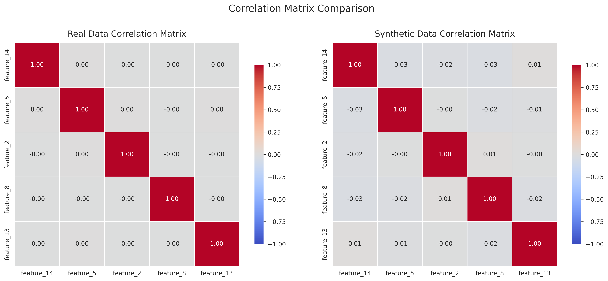

Synthetic Data Quality Report
This report evaluates the quality of synthetic data compared to real data.
Dataset Overview
| Metric | Real Data | Synthetic Data |
|---|---|---|
| Number of rows | 1000000 | 10000 |
| Number of columns | 21 | 21 |
| Memory usage | 160.22 MB | 1.60 MB |
Generator Information
Method: gaussian, Samples: 10000, Random State: 42
Overall Quality Metrics
| Metric | Value | Interpretation |
|---|---|---|
| real_data_size | 5000.0000 | Acceptable |
| synthetic_data_size | 5000.0000 | Acceptable |
| size_ratio | 1.0000 | Acceptable |
| num_numerical_columns | 20.0000 | Acceptable |
| num_categorical_columns | 0.0000 | Acceptable |
| avg_ks_statistic | 0.0160 | Distributions are very similar |
| avg_jensen_shannon_dist | 0.0572 | Acceptable |
| avg_mean_relative_error | 2.6464 | Poor |
| avg_std_relative_error | 0.0114 | Excellent |
| correlation_mean_difference | 0.0111 | Excellent |
| correlation_max_difference | 0.0416 | Excellent |
| privacy_risk | 0.0000 | Acceptable |
| utility_score | 0.9865 | Excellent |
| statistical_similarity | 0.9865 | Acceptable |
| privacy_score | 1.0000 | Excellent |
| quality_score | 0.9899 | Excellent |
Numerical Column Metrics
Column: feature_1
| Metric | Value |
|---|---|
| mean_real | 1.0002 |
| mean_synthetic | 0.9921 |
| mean_relative_error | 0.0082 |
| std_real | 1.0020 |
| std_synthetic | 1.0119 |
| std_relative_error | 0.0098 |
| min_real | -3.0477 |
| min_synthetic | -1.7220 |
| max_real | 4.4577 |
| max_synthetic | 3.7238 |
| Kolmogorov-Smirnov statistic | 0.0108 |
| Kolmogorov-Smirnov p-value | 0.9325 |
| Jensen-Shannon distance | 0.0536 |
Column: feature_2
| Metric | Value |
|---|---|
| mean_real | 2.0122 |
| mean_synthetic | 2.0151 |
| mean_relative_error | 0.0015 |
| std_real | 0.9899 |
| std_synthetic | 1.0045 |
| std_relative_error | 0.0148 |
| min_real | -2.0546 |
| min_synthetic | -0.6853 |
| max_real | 5.8244 |
| max_synthetic | 4.7127 |
| Kolmogorov-Smirnov statistic | 0.0146 |
| Kolmogorov-Smirnov p-value | 0.6609 |
| Jensen-Shannon distance | 0.0594 |
Column: feature_3
| Metric | Value |
|---|---|
| mean_real | 2.9830 |
| mean_synthetic | 2.9698 |
| mean_relative_error | 0.0044 |
| std_real | 0.9984 |
| std_synthetic | 0.9872 |
| std_relative_error | 0.0112 |
| min_real | -0.4300 |
| min_synthetic | 0.3387 |
| max_real | 6.4565 |
| max_synthetic | 5.6229 |
| Kolmogorov-Smirnov statistic | 0.0152 |
| Kolmogorov-Smirnov p-value | 0.6104 |
| Jensen-Shannon distance | 0.0546 |
Column: feature_4
| Metric | Value |
|---|---|
| mean_real | 3.9973 |
| mean_synthetic | 4.0062 |
| mean_relative_error | 0.0022 |
| std_real | 1.0142 |
| std_synthetic | 0.9997 |
| std_relative_error | 0.0143 |
| min_real | 0.4602 |
| min_synthetic | 1.2483 |
| max_real | 7.7595 |
| max_synthetic | 6.7535 |
| Kolmogorov-Smirnov statistic | 0.0138 |
| Kolmogorov-Smirnov p-value | 0.7279 |
| Jensen-Shannon distance | 0.0632 |
Column: feature_5
| Metric | Value |
|---|---|
| mean_real | 5.0072 |
| mean_synthetic | 5.0152 |
| mean_relative_error | 0.0016 |
| std_real | 1.0024 |
| std_synthetic | 1.0071 |
| std_relative_error | 0.0048 |
| min_real | 1.5890 |
| min_synthetic | 2.3204 |
| max_real | 8.4960 |
| max_synthetic | 7.6939 |
| Kolmogorov-Smirnov statistic | 0.0134 |
| Kolmogorov-Smirnov p-value | 0.7605 |
| Jensen-Shannon distance | 0.0566 |
Column: feature_6
| Metric | Value |
|---|---|
| mean_real | 6.0188 |
| mean_synthetic | 6.0366 |
| mean_relative_error | 0.0029 |
| std_real | 1.0016 |
| std_synthetic | 0.9978 |
| std_relative_error | 0.0038 |
| min_real | 2.5310 |
| min_synthetic | 3.3193 |
| max_real | 9.7042 |
| max_synthetic | 8.7126 |
| Kolmogorov-Smirnov statistic | 0.0178 |
| Kolmogorov-Smirnov p-value | 0.4067 |
| Jensen-Shannon distance | 0.0616 |
Column: feature_7
| Metric | Value |
|---|---|
| mean_real | 7.0014 |
| mean_synthetic | 7.0052 |
| mean_relative_error | 0.0005 |
| std_real | 1.0033 |
| std_synthetic | 1.0167 |
| std_relative_error | 0.0133 |
| min_real | 3.5377 |
| min_synthetic | 4.2033 |
| max_real | 10.6481 |
| max_synthetic | 9.7860 |
| Kolmogorov-Smirnov statistic | 0.0110 |
| Kolmogorov-Smirnov p-value | 0.9229 |
| Jensen-Shannon distance | 0.0470 |
Column: feature_8
| Metric | Value |
|---|---|
| mean_real | 8.0176 |
| mean_synthetic | 7.9955 |
| mean_relative_error | 0.0028 |
| std_real | 1.0036 |
| std_synthetic | 0.9930 |
| std_relative_error | 0.0106 |
| min_real | 4.7913 |
| min_synthetic | 5.3416 |
| max_real | 11.7120 |
| max_synthetic | 10.6747 |
| Kolmogorov-Smirnov statistic | 0.0138 |
| Kolmogorov-Smirnov p-value | 0.7279 |
| Jensen-Shannon distance | 0.0585 |
Column: feature_9
| Metric | Value |
|---|---|
| mean_real | 9.0112 |
| mean_synthetic | 8.9840 |
| mean_relative_error | 0.0030 |
| std_real | 1.0001 |
| std_synthetic | 0.9888 |
| std_relative_error | 0.0113 |
| min_real | 4.9912 |
| min_synthetic | 6.2932 |
| max_real | 13.2956 |
| max_synthetic | 11.7202 |
| Kolmogorov-Smirnov statistic | 0.0278 |
| Kolmogorov-Smirnov p-value | 0.0420 |
| Jensen-Shannon distance | 0.0535 |
Column: feature_10
| Metric | Value |
|---|---|
| mean_real | 9.9900 |
| mean_synthetic | 9.9604 |
| mean_relative_error | 0.0030 |
| std_real | 0.9991 |
| std_synthetic | 0.9916 |
| std_relative_error | 0.0074 |
| min_real | 6.4353 |
| min_synthetic | 7.3367 |
| max_real | 14.0493 |
| max_synthetic | 12.6462 |
| Kolmogorov-Smirnov statistic | 0.0168 |
| Kolmogorov-Smirnov p-value | 0.4807 |
| Jensen-Shannon distance | 0.0555 |
Column: feature_11
| Metric | Value |
|---|---|
| mean_real | -0.0188 |
| mean_synthetic | -0.0166 |
| mean_relative_error | 0.1199 |
| std_real | 0.9903 |
| std_synthetic | 1.0069 |
| std_relative_error | 0.0167 |
| min_real | -3.6497 |
| min_synthetic | -2.7265 |
| max_real | 3.5018 |
| max_synthetic | 2.6891 |
| Kolmogorov-Smirnov statistic | 0.0120 |
| Kolmogorov-Smirnov p-value | 0.8643 |
| Jensen-Shannon distance | 0.0521 |
Column: feature_12
| Metric | Value |
|---|---|
| mean_real | 0.0011 |
| mean_synthetic | 0.0475 |
| mean_relative_error | 42.8590 |
| std_real | 1.0178 |
| std_synthetic | 1.0115 |
| std_relative_error | 0.0062 |
| min_real | -3.4953 |
| min_synthetic | -2.7585 |
| max_real | 3.8545 |
| max_synthetic | 2.7818 |
| Kolmogorov-Smirnov statistic | 0.0244 |
| Kolmogorov-Smirnov p-value | 0.1019 |
| Jensen-Shannon distance | 0.0555 |
Column: feature_13
| Metric | Value |
|---|---|
| mean_real | -0.0030 |
| mean_synthetic | 0.0102 |
| mean_relative_error | 4.3623 |
| std_real | 0.9949 |
| std_synthetic | 1.0025 |
| std_relative_error | 0.0076 |
| min_real | -3.2744 |
| min_synthetic | -2.6402 |
| max_real | 4.4053 |
| max_synthetic | 2.6390 |
| Kolmogorov-Smirnov statistic | 0.0142 |
| Kolmogorov-Smirnov p-value | 0.6946 |
| Jensen-Shannon distance | 0.0595 |
Column: feature_14
| Metric | Value |
|---|---|
| mean_real | 0.0186 |
| mean_synthetic | 0.0050 |
| mean_relative_error | 0.7311 |
| std_real | 0.9952 |
| std_synthetic | 1.0033 |
| std_relative_error | 0.0081 |
| min_real | -3.4882 |
| min_synthetic | -2.6790 |
| max_real | 4.0687 |
| max_synthetic | 2.7187 |
| Kolmogorov-Smirnov statistic | 0.0148 |
| Kolmogorov-Smirnov p-value | 0.6441 |
| Jensen-Shannon distance | 0.0618 |
Column: feature_15
| Metric | Value |
|---|---|
| mean_real | 0.0250 |
| mean_synthetic | 0.0072 |
| mean_relative_error | 0.7119 |
| std_real | 1.0251 |
| std_synthetic | 1.0464 |
| std_relative_error | 0.0207 |
| min_real | -3.5167 |
| min_synthetic | -2.7423 |
| max_real | 3.6871 |
| max_synthetic | 2.8094 |
| Kolmogorov-Smirnov statistic | 0.0240 |
| Kolmogorov-Smirnov p-value | 0.1123 |
| Jensen-Shannon distance | 0.0641 |
Column: feature_16
| Metric | Value |
|---|---|
| mean_real | -0.0094 |
| mean_synthetic | 0.0035 |
| mean_relative_error | 1.3762 |
| std_real | 0.9972 |
| std_synthetic | 1.0116 |
| std_relative_error | 0.0145 |
| min_real | -3.5286 |
| min_synthetic | -2.6538 |
| max_real | 4.6833 |
| max_synthetic | 2.6422 |
| Kolmogorov-Smirnov statistic | 0.0156 |
| Kolmogorov-Smirnov p-value | 0.5770 |
| Jensen-Shannon distance | 0.0595 |
Column: feature_17
| Metric | Value |
|---|---|
| mean_real | -0.0147 |
| mean_synthetic | -0.0001 |
| mean_relative_error | 0.9940 |
| std_real | 0.9963 |
| std_synthetic | 1.0062 |
| std_relative_error | 0.0099 |
| min_real | -3.7929 |
| min_synthetic | -2.6645 |
| max_real | 3.4991 |
| max_synthetic | 2.6549 |
| Kolmogorov-Smirnov statistic | 0.0168 |
| Kolmogorov-Smirnov p-value | 0.4807 |
| Jensen-Shannon distance | 0.0566 |
Column: feature_18
| Metric | Value |
|---|---|
| mean_real | 0.0155 |
| mean_synthetic | 0.0211 |
| mean_relative_error | 0.3610 |
| std_real | 0.9994 |
| std_synthetic | 1.0227 |
| std_relative_error | 0.0234 |
| min_real | -3.6285 |
| min_synthetic | -2.6503 |
| max_real | 3.5747 |
| max_synthetic | 2.6977 |
| Kolmogorov-Smirnov statistic | 0.0156 |
| Kolmogorov-Smirnov p-value | 0.5770 |
| Jensen-Shannon distance | 0.0661 |
Column: feature_19
| Metric | Value |
|---|---|
| mean_real | 0.0118 |
| mean_synthetic | -0.0044 |
| mean_relative_error | 1.3713 |
| std_real | 1.0045 |
| std_synthetic | 0.9878 |
| std_relative_error | 0.0165 |
| min_real | -3.6197 |
| min_synthetic | -2.6757 |
| max_real | 3.5823 |
| max_synthetic | 2.6939 |
| Kolmogorov-Smirnov statistic | 0.0174 |
| Kolmogorov-Smirnov p-value | 0.4355 |
| Jensen-Shannon distance | 0.0550 |
Column: feature_20
| Metric | Value |
|---|---|
| mean_real | 0.0067 |
| mean_synthetic | 0.0066 |
| mean_relative_error | 0.0111 |
| std_real | 1.0000 |
| std_synthetic | 0.9974 |
| std_relative_error | 0.0026 |
| min_real | -3.8831 |
| min_synthetic | -2.7176 |
| max_real | 4.2351 |
| max_synthetic | 2.7323 |
| Kolmogorov-Smirnov statistic | 0.0102 |
| Kolmogorov-Smirnov p-value | 0.9572 |
| Jensen-Shannon distance | 0.0510 |
Data Visualizations
Distributions Comparison

Correlation Matrix Comparison
Data Samples
Real Data Sample
| feature_1 | feature_2 | feature_3 | feature_4 | feature_5 | feature_6 | feature_7 | feature_8 | feature_9 | feature_10 | feature_11 | feature_12 | feature_13 | feature_14 | feature_15 | feature_16 | feature_17 | feature_18 | feature_19 | feature_20 | target |
|---|---|---|---|---|---|---|---|---|---|---|---|---|---|---|---|---|---|---|---|---|
| 1.496714 | 2.169172 | 4.064722 | 2.892840 | 4.815994 | 5.797254 | 7.166571 | 8.017076 | 9.170982 | 11.224528 | -1.482041 | -1.018500 | -0.932771 | -0.826353 | -1.723592 | -0.125932 | -0.617163 | 1.539637 | -1.087963 | 0.088477 | 0 |
| 0.861736 | 1.878495 | 2.503287 | 2.230638 | 5.043793 | 6.910803 | 4.794584 | 6.620612 | 7.282231 | 11.759238 | 0.204001 | -0.111976 | -0.407683 | 0.350853 | 0.671728 | -0.570390 | 0.361864 | 1.152902 | -0.922906 | 1.886183 | 1 |
| 1.647689 | 3.156625 | 3.129260 | 3.662192 | 6.182518 | 7.041890 | 8.527111 | 7.457036 | 7.331238 | 9.905432 | -0.015285 | 0.004666 | 0.338182 | 0.361589 | 0.869578 | 0.064401 | 1.061850 | 0.279334 | -1.163943 | 0.194942 | 1 |
| 2.523030 | 2.200086 | 1.520307 | 4.502378 | 4.715680 | 6.397202 | 7.509416 | 6.864638 | 7.684778 | 9.924350 | -0.912439 | 0.697829 | 0.555014 | -0.317531 | -1.301193 | 0.845784 | 0.861390 | 0.887796 | 0.854134 | 1.632714 | 1 |
| 0.765847 | 2.864611 | 2.690153 | 4.443503 | 4.674846 | 6.360989 | 5.466305 | 7.387519 | 9.681952 | 9.737077 | -3.065458 | 0.371964 | -0.300118 | -2.014426 | 1.635533 | 0.322967 | 1.448205 | 0.973339 | 0.975959 | 1.455579 | 1 |
Synthetic Data Sample
| feature_1 | feature_2 | feature_3 | feature_4 | feature_5 | feature_6 | feature_7 | feature_8 | feature_9 | feature_10 | feature_11 | feature_12 | feature_13 | feature_14 | feature_15 | feature_16 | feature_17 | feature_18 | feature_19 | feature_20 | target |
|---|---|---|---|---|---|---|---|---|---|---|---|---|---|---|---|---|---|---|---|---|
| -0.186248 | 3.001585 | 3.452730 | 3.289984 | 4.583812 | 7.146348 | 5.380180 | 8.157271 | 9.118018 | 9.706842 | 1.108419 | -0.258573 | -0.116927 | -0.604281 | -0.711369 | -1.655866 | -1.452684 | 0.953037 | 0.364346 | -2.130371 | 0 |
| 0.876631 | 4.291605 | 3.766069 | 4.613306 | 5.278828 | 5.970741 | 6.580468 | 7.492650 | 9.545509 | 10.420491 | 0.390685 | 0.198940 | -0.460595 | 0.888556 | -0.611717 | -0.185089 | 1.258019 | 1.217451 | 0.022535 | 0.401157 | 1 |
| 0.408842 | 2.368086 | 1.567553 | 4.466424 | 7.302511 | 6.779382 | 6.731838 | 6.981443 | 9.372826 | 10.419452 | 1.042527 | -0.364226 | -1.591075 | -0.629373 | -0.342759 | -0.016487 | -1.288552 | 1.181965 | 0.078112 | 0.064070 | 0 |
| 0.601268 | 3.638666 | 4.646142 | 3.617489 | 4.660667 | 8.146970 | 7.728803 | 8.985026 | 9.203343 | 10.545932 | 0.976633 | 2.360843 | 0.889585 | -0.919277 | 0.106737 | -0.223552 | -0.134242 | -0.069770 | -0.309269 | 1.198629 | 0 |
| 2.543423 | 1.664788 | 3.597479 | 1.248251 | 6.383769 | 5.845947 | 7.790146 | 7.245710 | 7.953736 | 9.690126 | 0.227869 | 1.208155 | -0.248223 | -0.839817 | -0.193863 | -1.228221 | 1.883106 | -1.208477 | 1.533474 | 0.521287 | 0 |